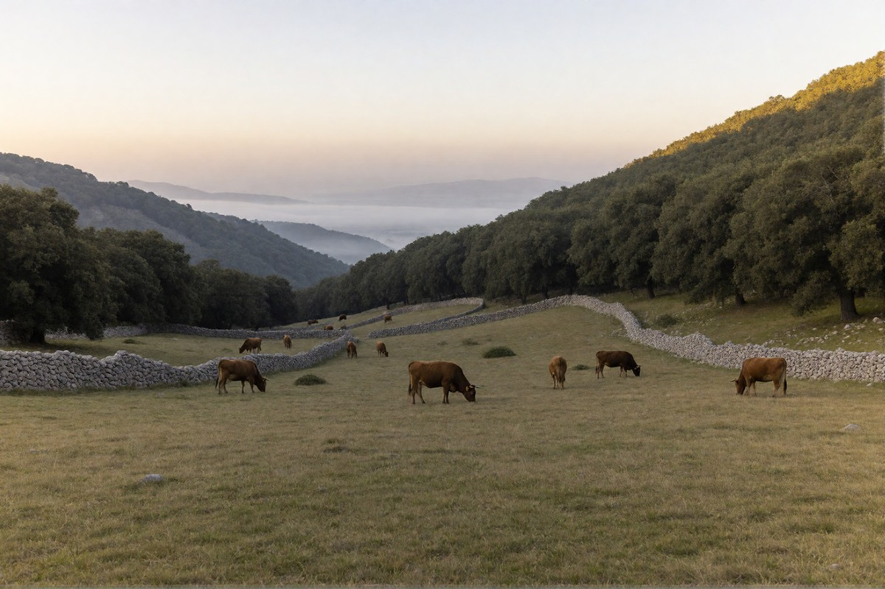

Mafia e antimafia · 10 novembre 2026
Nebrodi, sette arresti: pascoli e contributi agricoli presi con la paura

L'indagine della Direzione distrettuale antimafia di Catania documenta per la prima volta un gruppo mafioso fra Cesarò e San Teodoro. Circa trenta le vittime fra allevatori e imprenditori agricoli.
di Franco Zanghì
Siamo fra Cesarò e San Teodoro, due paesi di montagna in provincia di Messina, nel cuore dei Nebrodi: boschi, pascoli, allevamenti. All'alba di martedì 10 novembre 2026 i carabinieri della compagnia di Santo Stefano di Camastra hanno eseguito un'ordinanza di custodia cautelare in carcere emessa dal giudice per le indagini preliminari di Catania, su richiesta della Direzione distrettuale antimafia.
Sette le persone arrestate, fra le province di Messina, Catania, Enna e Ragusa. Ad altre sette, indagate per gli stessi reati, è stato notificato l'invito a presentarsi per l'interrogatorio preventivo. Secondo l'ANSA l'indagine documenta per la prima volta l'operatività di un gruppo mafioso proprio in quei due paesi.
Le accuse
A vario titolo si contestano l'associazione mafiosa, l'estorsione aggravata dal metodo mafioso, lo sfruttamento del lavoro e altri reati. Secondo gli inquirenti il gruppo farebbe capo a una fazione locale ritenuta affiliata alla famiglia catanese di Cosa nostra dei Santapaola-Ercolano.
Il meccanismo contestato
Secondo l'accusa gli indagati intimidivano allevatori e imprenditori agricoli dei Nebrodi per ottenere i terreni demaniali da destinare al pascolo, e con quelli i contributi dell'Agea, l'agenzia che paga gli aiuti all'agricoltura. Gli inquirenti contestano pestaggi, minacce, furti di bestiame e danneggiamenti, per costringere i proprietari a vendere o a cedere la terra.
Le vittime sono circa una trentina. Alcune, secondo l'accusa, avrebbero pagato da 500 a 1.000 euro; altre avrebbero affidato lavori di manutenzione a imprese vicine agli indagati.
I controlli aggirati e i ragazzi nei campi
Secondo le testate che hanno ripreso la nota della procura, alcuni agronomi e veterinari sarebbero stati costretti a saltare i controlli sanitari e a certificare il falso sul numero dei capi di bestiame, e alcune aziende agricole sarebbero state intestate a prestanome per sfuggire ai controlli antimafia.
Nei campi di Maletto e di Cesarò, sempre secondo l'accusa, lavoravano in condizioni di sfruttamento anche ragazzi stranieri minorenni, arrivati in Italia da soli.
Il punto
Gli indagati sono da considerarsi innocenti fino a sentenza definitiva: siamo nella fase delle indagini preliminari, e alla data di pubblicazione non risultano dichiarazioni delle difese.
Resta il quadro che l'accusa descrive: sette persone in carcere, circa trenta vittime, e l'uso della paura per prendersi pascoli e contributi pubblici. La domanda che conta, sui Nebrodi, è se chi alleva oggi si senta più libero di denunciare.
Fonti
- ANSA Sicilia, «Mafia, 7 in carcere per estorsioni, maltrattamenti e sfruttamento del lavoro», 10 novembre 2026
- Avvenire, «Sette arresti per mafia in Sicilia, sfruttati anche minori non accompagnati», 10 novembre 2026
- BlogSicilia, «Blitz antimafia sui Nebrodi, 7 arresti e 7 indagati», 10 novembre 2026
- Telemistretta, «Mafia sui Nebrodi, sette arresti: intimidazioni ad allevatori per accaparrarsi terreni e fondi Agea», 10 novembre 2026
Questo articolo nasce dalla pagina Gli Eroi dell'Abisso, dove la stessa storia è raccontata in video.